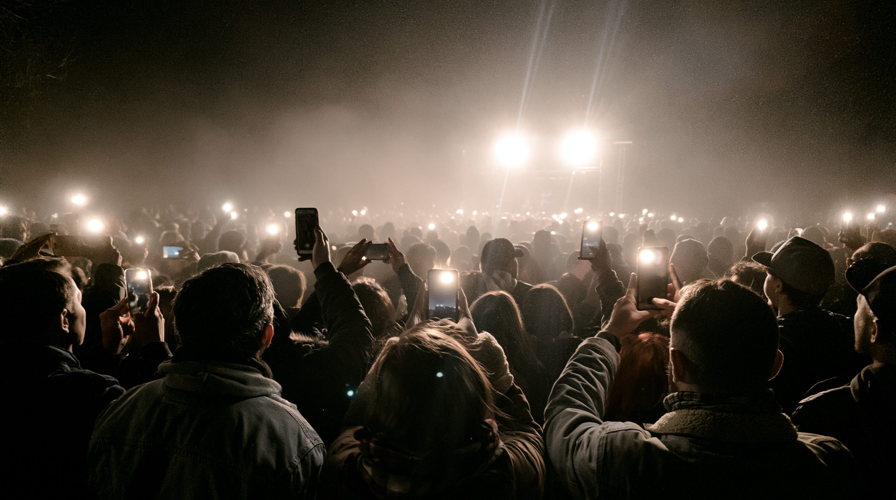

01核心と問い — 「攻める側」と「護る側」の非対称
情報操作（インフルエンス・オペレーション）は目新しい手法ではない。だが2022年以降の生成AIの普及は、その性質を根本から変えた。かつて偽情報の作成には人手と時間がかかる「職人芸」の側面があったが、いまや一人のオペレーターが生成AIを使い、数千の異なる「人格」を持つアカウントから、それぞれ微妙に異なる文面・画像・動画を無限に生成できる。手作業の工作は、工業化された生産ラインへと変わった。2026年に国政選挙を予定する40カ国超で、外国発の組織的な干渉や偽情報工作への警戒が広がっているのは、この工業化がもたらした帰結にほかならない。
物理的な戦闘を伴わず、標的社会の認識・世論・意思決定そのものを操作対象とする作戦概念。台湾国家安全局は、中国がSNS上のボット網・提携マーケティング企業・生成AIツールを組み合わせ、台湾社会の内部分裂を煽り、抵抗の意志を弱め、同盟国の支援意欲を削ぐことを狙う「認知戦」を展開していると分析する。戦争が始まる前から、頭の中の戦場はすでに動いている、という認識がこの概念の核心にある。
02タイムライン — 「発覚」から「工業化」へ
ロシアによる米大統領選干渉が発覚
ロシアの情報機関が関与したとされる組織的な偽情報拡散とハッキングが表面化し、「国家による選挙干渉」という概念が世界の安全保障議論の中心に躍り出た。現代的な情報戦認識の起点となった。
ケンブリッジ・アナリティカ事件
英選挙コンサルティング企業ケンブリッジ・アナリティカが、研究者アレクサンドル・コーガン開発のFacebook性格診断アプリを通じて、アプリ利用者本人だけでなくその「友人」のデータまで無断で収集し、最大8700万人分のFacebookユーザー情報を同意なく取得・悪用していたことが発覚した。有権者の心理特性に合わせた広告配信への転用が明らかになり、データ駆動型の世論誘導という手法の存在が広く知られるきっかけとなった。
COVID-19「インフォデミック」
世界保健機関（WHO）が「インフォデミック」という語を公式に用い、パンデミックをめぐる偽情報の氾濫が公衆衛生上の脅威になり得ることを警告した。健康・科学分野が新たな標的として浮上した。
生成AIの普及で偽情報コストが崩壊
ChatGPTをはじめとする生成AIが一般に普及し、偽情報の作成・翻訳・大量生成にかかるコストと時間が劇的に低下した。単一の攻撃者が、無数の偽アカウント・偽人格を運用できる基盤が整った。
インドネシア大統領選と台湾での記録的な偽情報
インドネシア大統領選ではほぼ全ての候補者組がディープフェイク攻撃の標的となり、虚偽情報件数は前回選挙の2倍に増加した。同年、台湾で確認された偽情報は216万件に達し、中国の「認知作戦」の常態化が指摘された。
選挙工作の資金源が問題に
暗号資産などを通じた不透明な資金の流れが、偽情報・影響工作の資金源になっているとの指摘が相次いだ。ただし具体的な金額や送金経路の全容は依然として不明な点が多い。
インド・パキスタン軍事衝突でAI偽情報が氾濫
両国間の軍事衝突の最中、AI生成の偽画像・偽映像がSNS上に大量に拡散し、戦況の実態把握を困難にした。実際の紛争と生成AIによる偽情報が同時進行する事例として注目された。
欧州連合、偽情報の行動規範をDSAに組み込み
偽情報に関する行動規範が、デジタルサービス法（DSA）の枠組みに組み込まれた。任意の紳士協定だった規範が、巨大プラットフォームのリスク軽減策を評価する重要な基準へと位置づけを強めた。
トランプ政権下で偽情報研究への連邦資金が縮小
国防総省が偽情報を含む91件の社会科学研究への資金提供を停止したほか、国家科学財団（NSF）も偽情報関連研究への支援方針を見直した。政権は対策研究を「言論への政府介入」と位置づけた。
イラン・イスラエル・米紛争でディープフェイクが急増
紛争をめぐり110件超のディープフェイクが「勝利するイラン」を演出する目的で拡散し、単一のキャンペーンが1.45億回再生を記録した。数万の偽アカウントが動員されたとみられる。

036つの視点
| 立場 | 基本スタンス | 最大の主張 | 課題・懸念 |
|---|---|---|---|
| ロシア・中国・イラン | 情報操作の輸出国 | 分業体制で偽情報を増幅 | 国際的な非難と制裁リスク |
| 台湾 | 認知戦の最前線 | 民主主義体制を防衛する | 物量に対する防御コストの増大 |
| アメリカ | 規制解体と「検閲」論争 | 政府介入こそが最大の脅威 | 対策インフラの空白化 |
| 欧州連合 | DSAによる規制強化 | 法的拘束力で実効的に統制 | プラットフォームとの摩擦 |
| プラットフォーム企業 | モデレーションの板挟み | 大西洋間で基準が分岐 | AI生成の速度に検証が追いつかない |
| グローバル・サウス | 検証手段を持たない標的 | 最も実害が集中する地域 | ファクトチェック体制の欠如 |
04データ・統計
主要国の情報操作関連予算（推計）
中国の対外影響工作には年数十億ドル規模が投じられているとされ、一部報道では最大100億ドル規模との推計もある。ロシアは2026年予算で情報工作費を4.58億ドル増額した。いずれも算出基盤が異なる推計値であり、直接比較には注意が必要。出典：CEPA、各種報道
台湾で確認された偽情報件数の推移
2024年の216万件から2025年には231万件超へ増加した。国家安全局は、中国の認知戦がAIツールを取り入れて拡大していると分析する。出典：台湾国家安全局（NSB）
注目の数字
05深掘り — これから2〜3年で何が起きるか
情報操作は「発覚すれば止められる」段階を過ぎ、「常に一定量が存在する」ことを前提に社会が対応する段階へ移りつつある。生成AIの構造・規制の分断・非対称な脆弱性・終わらない検知競争という4つの軸で、今後2〜3年を見通す。
情報操作は、もはや「特定の選挙を守る」問題ではなく、「情報空間そのものをどう設計するか」という恒常的な課題になった。規制する側とされない側、検証できる側とできない側——この非対称性が埋まらない限り、「見えない戦争」は形を変えながら続いていく。
かくいうこの記事もAIによって執筆されています。特定の視点だけに触れ続けることは、物事を客観的に見る力を静かに奪っていく——その危機感から、一つの出来事を複数の立場で並べて伝えるこのメディアを始めました。事実確認には別のAIによるチェックを設け、できる限り正確な記述を心がけていますが、この世のすべての情報が完全な真実とは限りません。この記事についても鵜呑みにせず、特定の言論に流されない目で読んでいただければ幸いです。